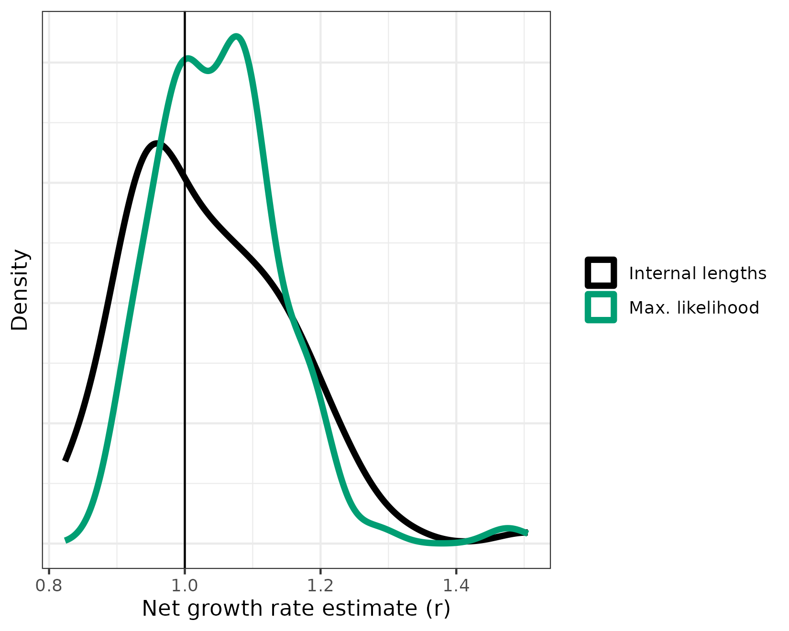

In this vignette, we’ll walk through how we simulated a birth-death branching process to validate our growth rate methods. The simulation procedure is a direct implementation of results by Amaury Lambert in a recent paper. We’ll show here that these results allow for extremely fast generation of a sampled tree of size n from a birth-death process of time T with fixed birth and death rates. The key point here is that we don’t have to simulate this using computationally intensive algorithms (gillespie etc.); the math provides a shortcut which allows us to generate the results on a single core in under a second for a tree with 100 tips or about 8 seconds for a tree with 1000 tips! And that’s with my average programming skills in R!
The applications of this fast generation of sampled trees are countless. For us, this results allowed us to simulate thousands of trees to check our methods for growth rate estimation from phylogenetic tree reconstruction, which is detailed in our recent preprint. We’ll reproduce this validation here!
Packages
First, we’ll have to load the packages we want to use. To help
understand what we’re simulating, we’ll want to be able to visualize the
trees. ggtree is a package which will help us do this.
ggtree is built using ggplot2 so we’ll use
that as well.
# Load and attach our package cloneRate
library(cloneRate)
# Install ggplot2 if necessary, then load and attach it with library()
if (!requireNamespace("ggplot2")) {
install.packages("ggplot2")
}
library(ggplot2)
# Install ggtree if necessary, then load and attach it with library()
if (!requireNamespace("ggtree")) {
install.packages("ggtree")
}
library(ggtree)Simulating ultrametric trees
We’ll be generating trees of class phylo, which is a
fairly straightforward encoding of phylogenetic trees in R. The ape
documentation describing the class phylo can be found here.
First, let’s simulate a single tree and have a look at the class
phylo. We’ll use the function [simUltra()] from our package
to do this, which simulates an ultrametric tree. Ultrametric means that
the tips are all equidistant from the root. We’ll set a birth rate
a, a death rate b, an age for the tree
cloneAge, and the number of tips n.
# Generate the tree
tree <- simUltra(a = 1, b = 0, cloneAge = 20, n = 100)
# We see that the tree is of class phylo
class(tree)
#> [1] "phylo"
# Preview the tree
print(tree)
#>
#> Phylogenetic tree with 100 tips and 100 internal nodes.
#>
#> Tip labels:
#> t8, t24, t29, t50, t68, t95, ...
#>
#> Rooted; includes branch lengths.Again, the best place to get more info about the class
phylo is here.
Our functions for simulating trees will include metadata. Let’s take a
look at the metadata included in the tree.
print(tree$metadata)
#> r a b cloneAge n runtime_seconds addStem
#> 1 1 1 0 20 100 0.566 TRUEWe see that the columns are:
-
r,a,b: The growth rate params.ris the net growth rate,ais birth rate andbis death rate, sor=a-b -
cloneAge: The time that passes, in the same units asr,a, andb. -
n: The number of tips that are sampled from the birth-death process, producing a tree withntips. -
runtime_seconds: The elapsed time to generate the tree. -
addStem: Tells us whether the tree has a root edge preceding the first split. We’ll show the “stem” in plots below.
Now let’s plot the tree.
ggtree(tree) + theme_tree2(fgcolor = "blue") + xlab("Time")In the tree we plotted above, we see that the “stem” is the edge extending from time 0 to the first split. We call these splits coalescence times and they’ll be very important for our methods of growth rate estimation.
Also, we see that the tips are ultrametric, meaning that they all are sampled at the same time, in this case 20 units of time after the birth-death process began. As a default, we’ll talk about units of time in years, but that is arbitrary. Just make sure the units of the growth rate (per year) are the same as the time units (years).
Let’s apply our growth rate estimates to this tree, seeing if our
estimates are close to the value of r that we used to
generate the tree. We have two functions for estimating the growth rate
of an ultrametric tree, and we’ll compare their performance later
on:
- [internalLengths()]: This function sums the edge lengths of the internal edges of the tree (excluding the stem). We call this sum \(L_i\). The growth rate is calculated as \(r = L_i / n\) where \(n\) is the number of sampled tips.
Both methods are detailed in our preprint.
maxLikelihood(tree)
#> lowerBound estimate upperBound cloneAgeEstimate sumInternalLengths
#> 1 0.7819396 0.9352259 1.088512 20 111.4954
#> sumExternalLengths extIntRatio n alpha runtime_s method
#> 1 1365.624 12.24825 100 0.05 0.06 maxLike
internalLengths(tree)
#> lowerBound estimate upperBound cloneAgeEstimate sumInternalLengths
#> 1 0.7211091 0.8968978 1.072687 20 111.4954
#> sumExternalLengths extIntRatio n alpha runtime_s method
#> 1 1365.624 12.24825 100 0.05 0.005 lengthsWe know that our actual growth rate is 1, so that is our comparison
to judge how our estimates are doing. One estimate doesn’t really tell
us much though. Let’s try 100. To do this, we just set the
nTrees param equal to 100 in our simUltra()
function. You can parallelize this process if you have the
parallel package installed by simply setting
nCores, but we’ll leave this at 1 for now.
tree.list <- simUltra(a = 1, b = 0, cloneAge = 20, n = 100, nTrees = 100, nCores = 1)Let’s apply our methods to these trees
resultsMaxLike <- maxLikelihood(tree.list)
resultsLengths <- internalLengths(tree.list)We gave each method 100 trees to estimate, let’s plot these estimates and see how they perform. Remember that all the input trees had a growth rate of 1, so we want these estimates to be close to 1. We’ll use ggplot’s density plot for this:
combineResults <- rbind(resultsLengths, resultsMaxLike)
ggplot(combineResults) + geom_density(aes(x = estimate, color = method)) +
theme_bw() + geom_vline(xintercept = 1)
Not bad, but we’ll want to test this more formally over a large range of parameter values. More on that later in this vignette. For now, let’s shift our attention to mutation trees.